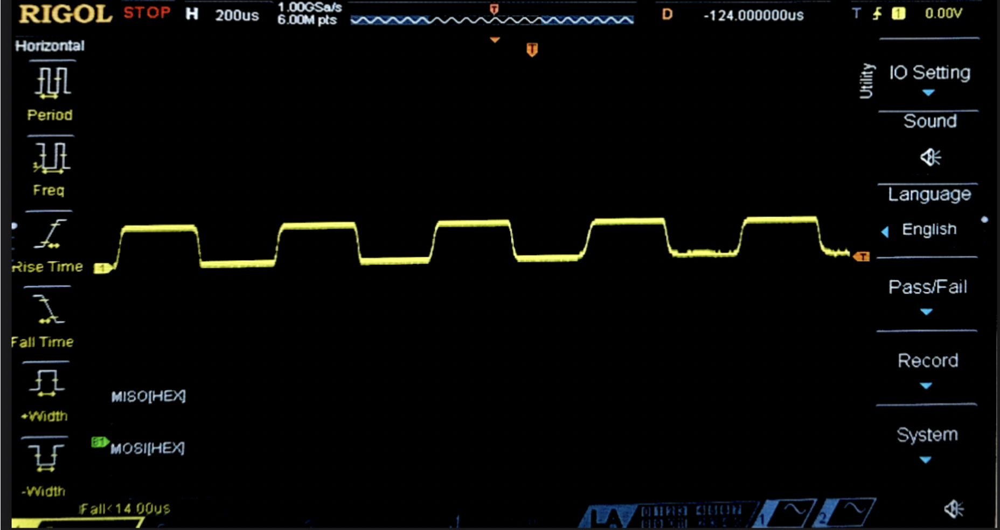
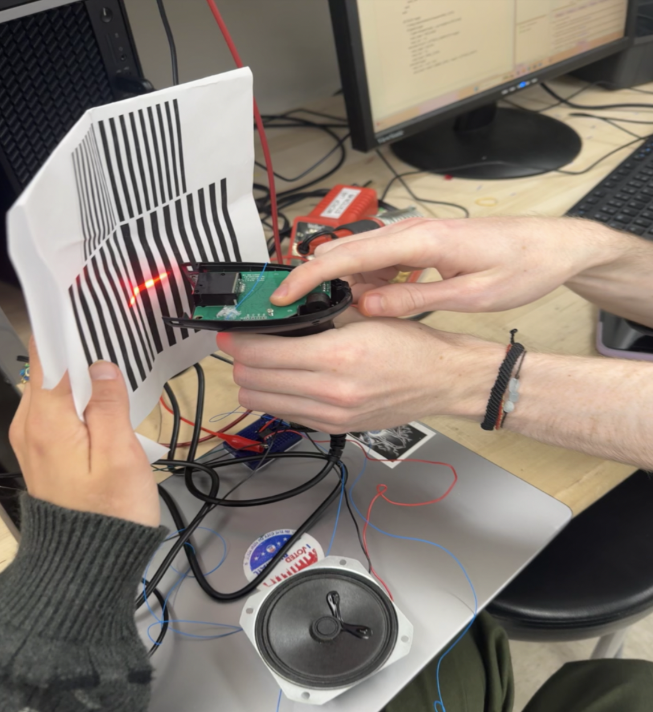
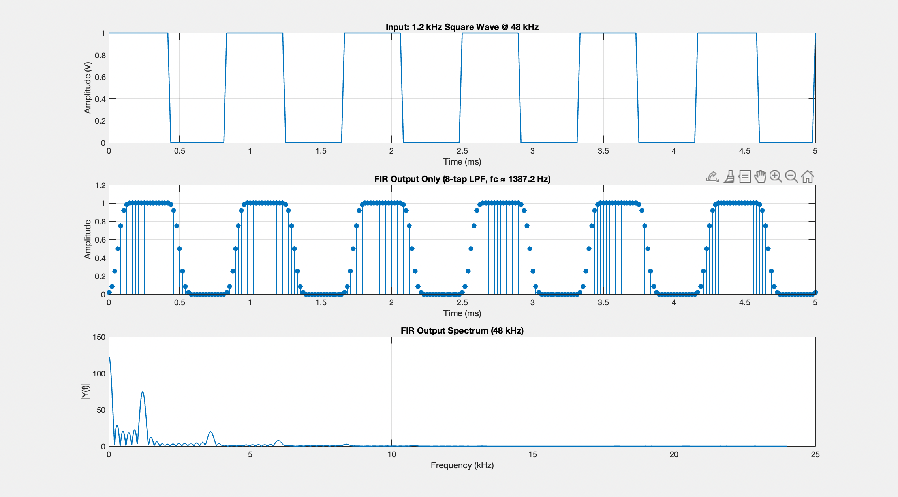
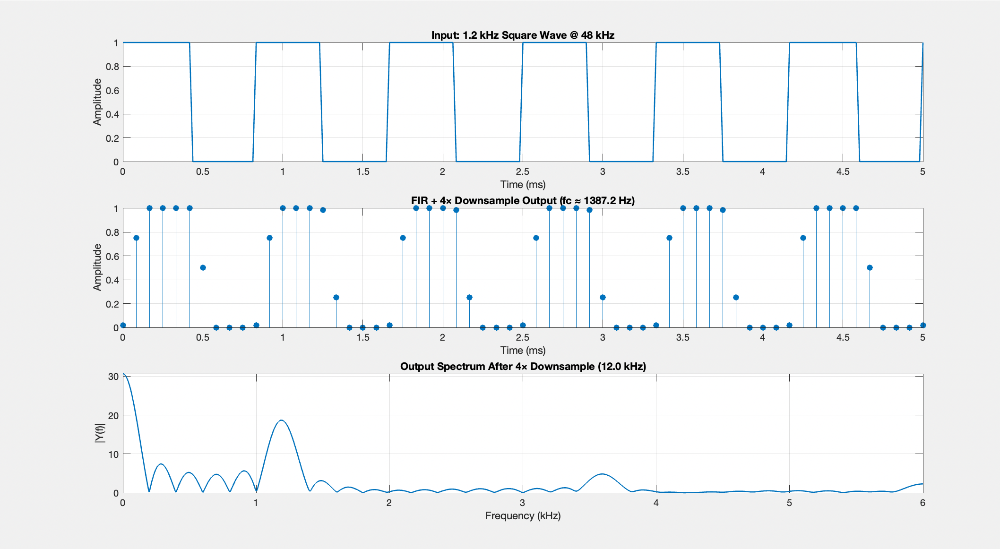
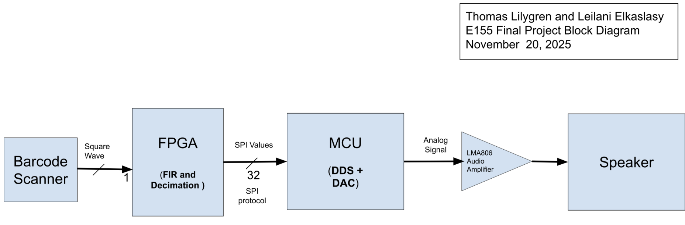
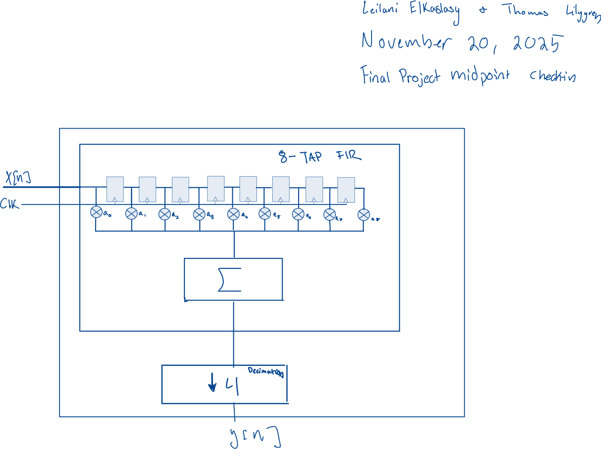
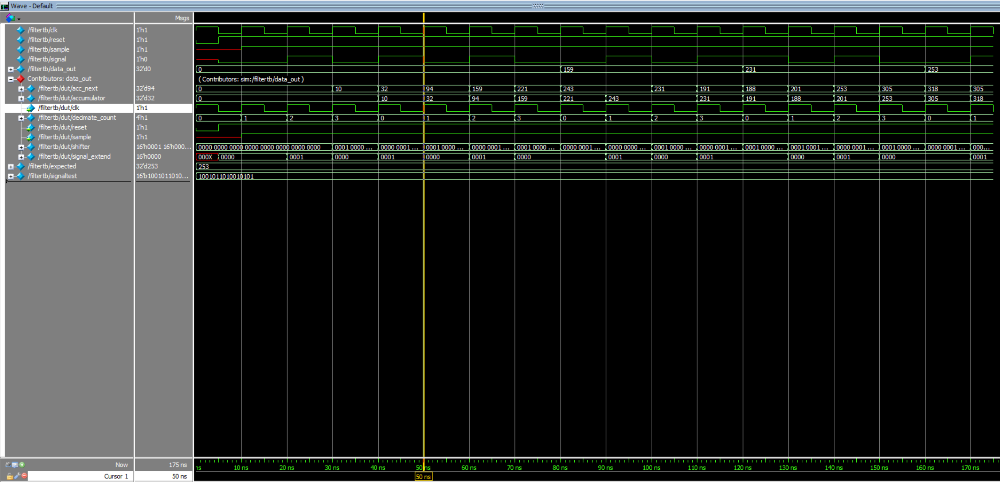
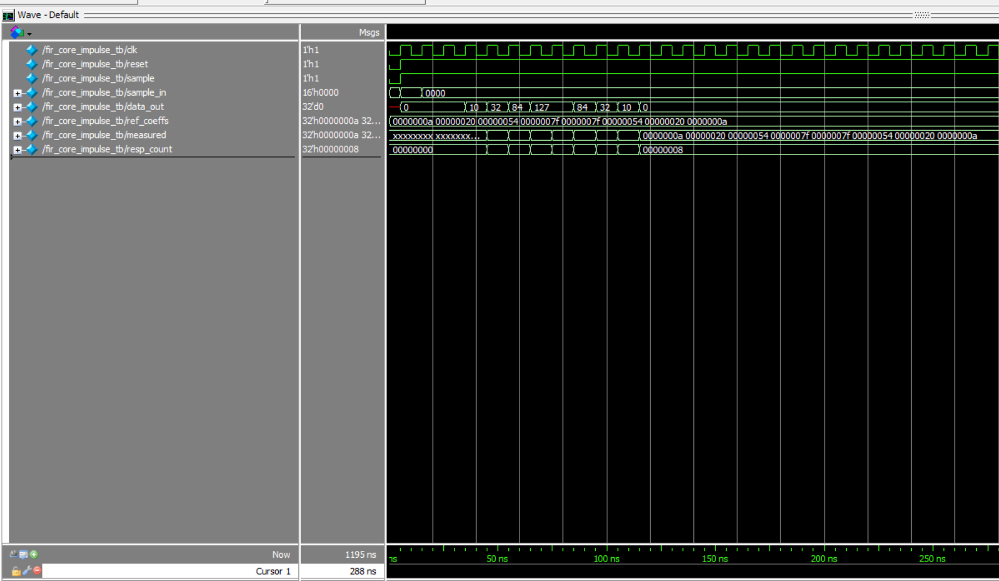
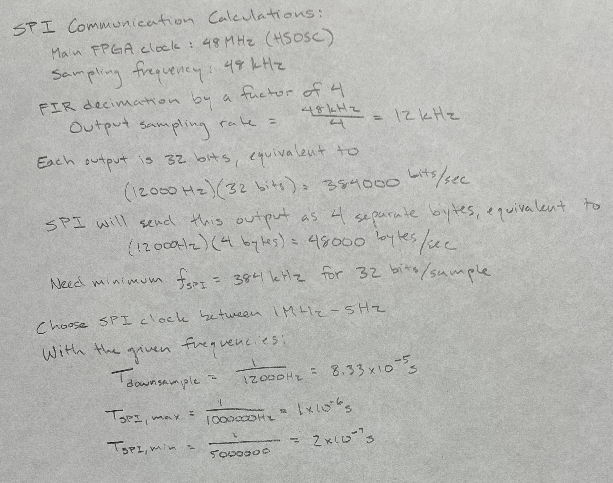
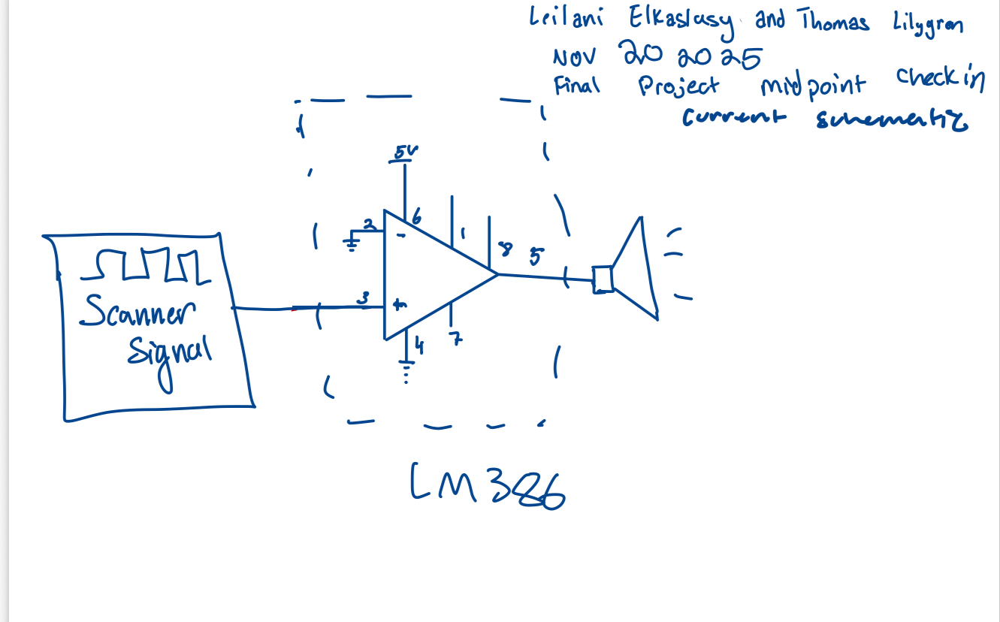

Binary Beats Midpoint Check-in
Introduction
Barcode Beats is well underway as the project timeline reaches its halfway mark. This project aims to take a barcode scanner and “hack” it into a synth like instrument. In order to achieve this a square wave will be found on the hardware of the scanner proportional to the barcode size its reading and that square wave will then enter a filtering system. First, on the FPGA it will be filtered and decimated to improve the sound. Then the data will be packaged and sent using SPI to the MCU where a DDS and DAC will convert the signal to an analog sin wave that will be sent to an audio amplifier and a speaker to be heard in real time!
Progress
Hardware
At this halfway mark, the riskiest part of the project has been completed and the barcode has been located and wired out of the scanner - a square wave within audible range has been confirmed both on the oscilloscope and by listening to the signal on a lab speaker.


FPGA
The FPGA verilog has been written to implement an FIR filter and 4x downsampling of the input signal. The FPGA filter was then tested using a testbench and confirmed to be functional.
Filter Design


The primary goal in designing the desired FIR filter was to stay within the 8-tap hardware limit of the FPGA while producing the roundest version of the input square wave. While not a traditional goal it was hypothesized that round sounds would sound coolest. In order to find the roundest possible output with an 8 tap low pass FIR filter a matlab script was designed to sweep the cutoff frequency and find the lowest total harmonic distortion such that the output was the smoothest. Thus the “roundest” coefficients were calculated and visualized (Figure 3). To emphasize the distortion that will ultimately be implemented with the MCU’s DDS peripheral, the low-pass filter was downsampled by a magnitude of 4, leading to the spectrum waveforms outlined in Figure 4.
A top-level overview of the FPGA layout is illustrated in Figure 5. The governing FPGA clock is implemented with the 48 MHz internal High-Speed Oscillator (HSOSC), and divided to 48 kHz with a counter for sampling. The square-wave barcode signal is first passed through a synchronizer module to eliminate issues with metastability before filtering and decimation are implemented.

The FIR filter resembles a shift register, with each segment in the register multiplied by a weighted tap coefficient, as outlined in the MATLAB figures above. The shift register and multiplication summation implement the convolution necessary to carry out FIR filtering.

Table 1: Tap Coefficient Weights
| Coefficient | Weight |
|---|---|
| a0 | 10 |
| a1 | 33 |
| a2 | 85 |
| a3 | 127 |
| a4 | 127 |
| a5 | 85 |
| a6 | 33 |
| a7 | 10 |
Filter Results and Simulations

The filter and decimation was tested with random input 11011000 and then the expected output was manually calculated to be 253 which matches the output on the test bench. Confirming the FPGA design is functional!
The FIR filter was seperated from any bit manipulation and tested in a vacume in order to verify that this aspect of the design was wroking as expected. In order to test the FIR filter an impulse response was input to the filter and the coefficients were output, confirming the FIR filter works.Future Work Plan
With the remainder of the project timeline the MCU will be programmed making use of the DDS and DAC and then the Scanner, FPGA, MCU and speaker will be integrated.
Table 2: Work Plan Through Demo Day
| Dates | Benchmarks |
|---|---|
| 11/21 - 11/25 | DAC and DDS implementation and testing |
| 11/28 - 11/30 | SPI implementation and confirmation |
| 12/1 - 12/2 | Full system integration, debugging, and report writing |
| 12/3 - 12/4 | Final checkoff and demo day |
SPI Communication Discussion
MCU Plan
Communication between the FPGA and MCU will be carried out with SPI. The 32-bit convolution sum will be sent from the FPGA to the MCU for DDS manipuation and DAC structuring. To carry out this process, the MCU will employ the SPI peripheral, the DMA peripheral will store the sine look up table that the FPGA output will direct, and the DAC peripheral will reconstruct and output the frequency-modulated signal.
The SPI code will be derived from the Lab 7 and modified for the 32-bit data transfer. The DMA and DAC peripherals will be implemented from scratch, according to the timeline described in Table 2.
SPI Communication Disscussion
The 32-bit convolution sum will be sent from the FPGA to the MCU for DDS manipulation and eventual DAC structuring. The calculations in Figure 8 demonstrate the corrected sampling period for the decimated sigal relative to selected 1 MHz - 5 MHz SPI communication rate. The math demonstrates that the 4-byte communication period within the specified range does not introduce significant timing issues that would throw off measurements.

For this checkoff, we are proving that the signal acquired by the barcode scanner can produce sound that varies based on bar width. The scanner signal is directly fed into the LM386 audio amplifier as demonstrated in Figure 9. The scanner audibly produces varying tones based on distance from the barcode and the bar widths, as desired. This test not only proves the concept of the project, but also serves as a reference for when we modulate the signal’s behavior.

Conclusion
As the midway point arrives, this project is shaping up on track! The hardware has been tested and proven successful and the FPGA FIR filter and down sampling has been created and proven! In order to drive this project home the DAC on the MCU will be integrated ringing in the next generation of Barcode Beats.